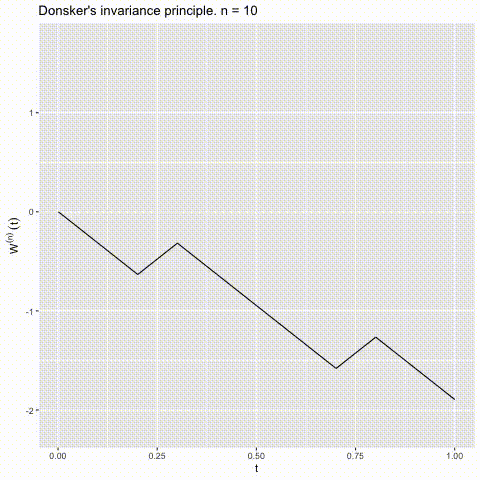

Donsker's theorem is a fundamental result in probability theory, particularly in the study of stochastic processes.
It establishes a convergence result that connects discrete random walks to Brownian motion.
Donsker’s Invariance Principle, also known as Donsker’s theorem or the functional central limit theorem, is a significant concept in probability theory. Named after the mathematician Monroe D. Donsker who formulated it in the 1950s, it is a functional extension of the central limit theorem.
The theorem is concerned with the convergence of certain types of stochastic processes to Brownian motion.
Let \(X_1, X_2, ...\) be a sequence of independent and identically distributed random variables with mean zero and finite variance.
Consider the scaled and centered random walk defined by \(S_n = a_1 + a_2 + ... + a_n\), where \(a_i\) are the random variables.
Donsker's theorem states that the scaled and centered process \((\frac{S_{[nt]}}{\sqrt{n}})_{t \geq 0}\) converges in distribution to a standard Brownian motion as \(n \rightarrow \infty\).
Donsker's theorem plays a crucial role in the development of probability theory and the understanding of the convergence of stochastic processes. It provides a powerful tool for analyzing the behavior of random walks and their connection to continuous processes, particularly Brownian motion.
This connection is essential in understanding how discrete processes evolve into continuous processes, bridging the gap between discrete-time and continuous-time stochastic processes.

Donsker's invariance principle for simple random walk